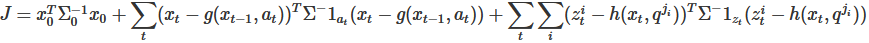

SLAMシステムの具体化
システム構成の方針
最適化アプローチ
前述(ロボット位置とランドマーク位置の同時推定 参照)の方程式を最小二乗問題として解くもの。これは非線形になるので繰り返し計算で解く。今回は最適化アプローチとしてグラフベースSLAMを用いる。
この最適化処理は一括処理でありリアルタイム性に欠けるので逐次処理と２段階で構成する。システムはフロントエンドとバックエンドに分かれる。フロントエンドでは地図の逐次生成やデータの対応付け、ループ検出、ポーズグラフ生成などを行う。バックエンドではループとじ込みで必要となるポーズ調整および地図の一括修正を行う。バックエンドの処理は負荷が高いのでフロントエンドとは別のスレッドで実行した方が良い。
図01 SLAMシステムの構成
本システムの概要
入力：センサとして2Dレーザスキャナとオドメトリを用いる。
出力：
ロボットの移動軌跡と点群地図。
ロボット位置とランドマーク一の推定：
スキャンマッチングを用いて、リアルタイムでロボット位置とランドマーク一を推定する逐次処理(逐次SLAM)を行う。
データ対応付け：
スキャンマッチングの手法であるICPの中で位置制約による対応付けを行う。
センサ融合：
スキャンマッチングによる推定値とオドメトリによる推定値を確率的に融合する。
ループ閉じ込み：
ループ検出とポーズ調整から構成する。ループ検出はスキャンマッチングにより行う。逐次SLAMよりも広い場所を探索し、マッチングスコアの高い場所があればループを検出したとみなす。ポーズ調整はループが閉じた後にロボット軌跡を修正する。
地図の管理：
占有格子地図と同様の仕組みを使って、点群地図を管理する。
グラフベースSLAM
SLAMのグラフ表現
SLAMの構造をグラフで表して定式化するもので完全SLAM問題を表すことが出来る。x: ロボット位置
q: ランドマーク位置
a: ロボット制御値
z: ランドマーク計測
図02 完全SLAM問題

図03 ポーズ調整
完全SLAM問題
ここでは、完全SLAM問題を定式化する。定式化を行っていくとなんだかんだで下の二つの式が得られる。(要修正)
計測モデル：
運動モデル：
完全SLAM問題では計測モデル、運動モデルを正規分布でモデル化して最小二乗問題に変換します。そして、その二乗誤差を最小化するロボット軌跡x[0: t]と地図mを解とします。 しかし、地図の共分散は計算するのが難しいため通常は扱いません。
q^j_i: 対応付け変数c^i_tによってz^i_tと対応付けられたm内のランドマーク
 この式の右辺第一因子は、時間的に隣接するロボット位置間の拘束であり、その相対位置はオドメトリで得たり、スキャンマッチングで求めたりします。一方右辺第二因子はループに関する拘束を表しています。ループがある場合は、時間的に隣接しないロボット位置の間に拘束が発生します。式中のCはループ検出されたロボット位置x_s, x_tの時刻の対の集合です。
この式の右辺第一因子は、時間的に隣接するロボット位置間の拘束であり、その相対位置はオドメトリで得たり、スキャンマッチングで求めたりします。一方右辺第二因子はループに関する拘束を表しています。ループがある場合は、時間的に隣接しないロボット位置の間に拘束が発生します。式中のCはループ検出されたロボット位置x_s, x_tの時刻の対の集合です。
ポーズ調整は、完全SLAM問題に比べて精度は劣りますが、処理コストやロバスト性に優れています。
計測モデル：
運動モデル：
完全SLAM問題では計測モデル、運動モデルを正規分布でモデル化して最小二乗問題に変換します。そして、その二乗誤差を最小化するロボット軌跡x[0: t]と地図mを解とします。 しかし、地図の共分散は計算するのが難しいため通常は扱いません。
計測モデルの変換
まず、はロボットが位置x_tにいるときに対応付け変数c^i_tで示される地図m内のランドマークを計測するとセンサ計測値z^i_tが得られる尤度です。
ここで、尤度は正規分布に比例した量であると仮定します。すると、次のように表せます。
k: 比例定数(簡単のため k=1 とする)q^j_i: 対応付け変数c^i_tによってz^i_tと対応付けられたm内のランドマーク
計測モデルの変換
はロボットが位置x_t-1にいて、ロボットへの制御命令a_tが与えられたときに、ロボットが位置x_tに移動する確率を表しています。概念としては、運動モデルは計測ではなく予測を表します。ただ、実際にはa_tにはオドメトリの計測値が使われます。も正規分布に比例すると仮定すると次のように表せます。
それを良い感じにすると(要修正)次の式が出てきます。これは共分散行列で重みづけられた「重みつき最小二乗問題」となります。

ポーズ調整
大きな地図ではランドマーク数が数万～数億にもなりえるので完全SLAM問題を直接特には膨大な計算が必要になります。そこで、計算量を減らすために完全SLAM問題をロボット軌跡の推定とランドマークの推定に分離します。ポーズ調整はこのうちのロボット軌跡の推定を行う技術です。具体的には、ロボット位置x_tを変数として時刻sのロボット位置と時刻tのロボット位置の相対位置d_stを定数として、次のような最小二乗問題を構成し、このJを最小化するx_0:tを求めます。
ポーズ調整は、完全SLAM問題に比べて精度は劣りますが、処理コストやロバスト性に優れています。
本書におけるグラフベースSLAM
(乞うご期待)